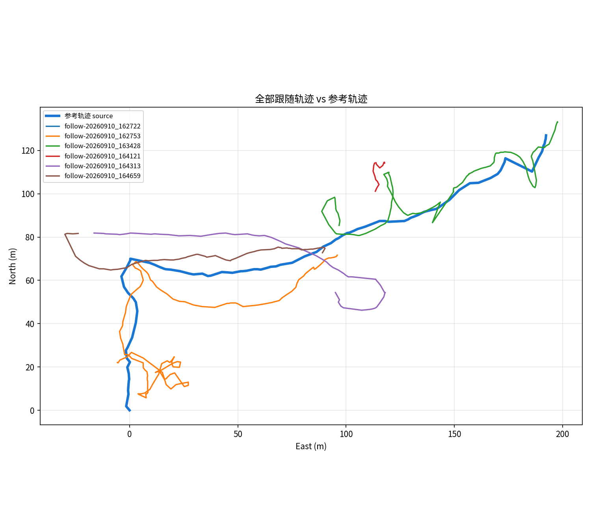

| 跟随轨迹 | 点数 | 平均横向误差(m) | 90分位横向误差(m) | 平均朝向误差(°) | good | degraded | lost |
|---|---|---|---|---|---|---|---|
| follow-20260910_162722 | 3 | 25.36 | 25.36 | 148.24 | 0.0 | 0.0 | 1.0 |
| follow-20260910_162753 | 217 | 9.91 | 17.25 | 45.36 | 0.12 | 0.35 | 0.53 |
| follow-20260910_163428 | 204 | 7.25 | 17.41 | 51.19 | 0.324 | 0.363 | 0.314 |
| follow-20260910_164121 | 31 | 22.89 | 26.97 | 81.12 | 0.0 | 0.0 | 1.0 |
| follow-20260910_164313 | 138 | 21.75 | 31.8 | 106.85 | 0.014 | 0.029 | 0.957 |
| follow-20260910_164659 | 111 | 8.24 | 20.35 | 42.7 | 0.27 | 0.432 | 0.297 |
全部轨迹叠加
